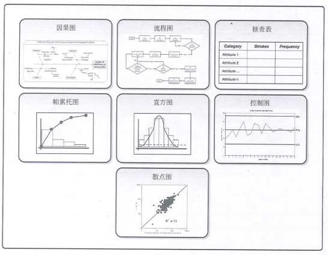
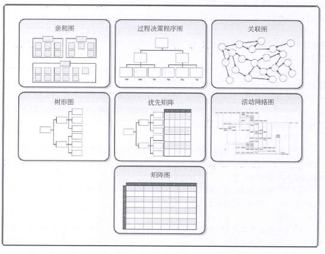

概念
- 1、质量
- 国际标准化组织（ISO）对质量的定义是：“反应实体满足主体明确和隐含需求的能力的特性总和”
- 国际标准（GB/T 19000-2008）对质量的定义：“一组固有特性满足要求的程度”
- 2、项目质量
- 从项目作为一次性的活动来看，项目质量体现在由WBS反映出的项目范围内所有阶段、子项目、项目工作单元的质量所构成，即项目的工作质量；从项目作为一项最终产品来看，项目质量体现在其性能或者使用价值上。
质量保证方法和与工具
- 1、质量审计
- 1、识别全部正在实施的良好及最佳实践
- 2、识别全部违规做法、差距及不足
- 3、分享所在组织或行业中类似项目的良好实践
- 4、积极、主动地提供协助，以改进过程的执行，从而帮助团队提高生产效率
- 5、强调每次审计都应对组织经验教训的积累做出贡献。
- 2、过程分析
- 按照过程改进计划中概括的步骤来识别所需要的改进。它也要检查在过程运行期间遇到的问题、制约因素，以及发现的非增值活动。过程分析包括根本原因分析——用于识别问题、探究根本原因，并制定预防措施的一种具体技术。
质量控制工具与技术
老七工具
- 1、因果图*（鱼骨图或石川馨图）
- 2、流程图
- 3、检查表
- 4、帕累托图
- 5、直方图
- 6、控制图
- 7、散点图
新七工具
- 1、亲和图
- 2、过程决策程序图
- 3、关联图
- 4、树形图
- 5、优先矩阵图
- 6、活动网络图
- 7、矩阵图

技术